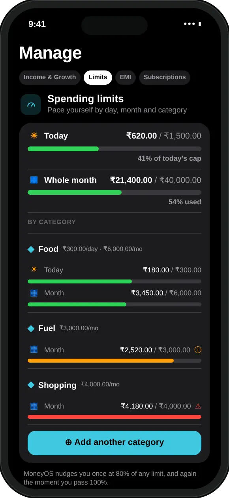

Why keep personal, family and business spending apart?
Because one total answers none of your real questions. You want to know what you spent, what the house cost, and what the work cost, and those are three different numbers.
If you freelance, run a small shop or pay some work costs yourself, those payments sit right next to your dinner orders in the same UPI history. The same goes for a household budget you manage for parents or a partner. Mixed together, a ₹4,500 laptop repair looks like you overspent on shopping, and the month's verdict is wrong for every part of your life.
Separate ledgers fix that. Each one has its own list, its own totals and its own limits, so you can ask simple questions and get honest answers: how much did the business spend this month? Did groceries for the family go up? Am I on track with my own money?
How do I keep separate ledgers in MoneyOS?
Pick the ledger first, then add as usual. MoneyOS has three built in: Personal, Family and Business. Four steps:
- Open the ledger menu. On Home, tap the button at the top right. It shows the ledger you are in now, for example Personal.
- Pick a ledger. Choose Personal, Family or Business. Home, Stats, Ask and Search switch to that ledger straight away.
- Add as usual. Type, say, screenshot or import as you always do. Everything you add now goes into the ledger you picked.
- Switch back. Tap the same button to go back to another ledger. You can also change it in Settings, under Active space.
It works for every way of adding money. A typed line, a voice entry, a UPI history screenshot, an imported bank statement, a Siri shortcut or a bank email shared to MoneyOS all land in the ledger that is open at the time.
What stays separate in each ledger?
Almost everything. Personal, Family and Business never mix: each ledger has its own transactions, cards, limits, income, EMIs and SIPs.
- Totals and charts. Home, Stats, the heat map, Search and Ask only see the open ledger.
- Limits and alerts. Monthly, daily, category and card limits are set per ledger, and the 80% and 100% alerts are checked per ledger. See how category budgets work.
- Income and commitments. Salary, other income, EMIs and SIPs belong to the ledger you added them in. See tracking EMIs with daily expenses.
- Category rules. The same merchant can be filed as Food in Personal and as Business in your work ledger. Rules live in Manage, under Rules.
One thing is shared: custom category names. A category you create, such as Side hustle, is available in all three ledgers, so you do not have to make it three times.

Which ledger should each expense go in?
Ask whose budget the money came out of, not which account paid.
- Personal: what you spend on yourself. Your meals, travel, phone recharge, clothes and subscriptions.
- Family: shared household costs. Groceries, rent, electricity, school fees, medicines for parents.
- Business: what your work costs. Office internet, courier, software, supplies, repairs to work equipment.
The payment method does not decide the ledger. If you pay for a work courier with your own UPI, your own card or cash from your wallet, it still belongs in Business. Mark how you paid on the entry, and put it in the ledger whose budget it came from.
When the same merchant means different things in different ledgers, correct the category once. MoneyOS offers to remember it as a rule for that ledger, and new entries from that merchant are filed the same way from then on. Rules only affect new entries, never ones you have already saved.
What if an expense lands in the wrong ledger?
Delete it and add it again in the right one. There is no move button.
Open the transaction, tap Delete transaction, switch ledgers from the button at the top right of Home, and add it again. The simplest way to avoid this is a quick glance at that button before you add anything: it always shows the name of the open ledger.
All three ledgers stay on your iPhone, with no account and no bank login, and the daily automatic backup holds every one of them. See our privacy policy for the details, or read why MoneyOS was built this way.
Frequently asked questions
Can I track personal and business expenses in one app?
Yes. MoneyOS has three separate ledgers on one iPhone: Personal, Family and Business. Each one has its own transactions, limits and totals, and you switch between them from the button at the top right of Home.
Does business spending show up in my personal total?
No. Every total, chart and score only counts the ledger you have open. Business spending stays in Business, and your personal month stays your own.
Do limits apply to all three ledgers together?
No. Each ledger has its own monthly, daily, category and card limits, and limit alerts are checked per ledger. You can give Business a limit and leave Family without one.
What if I add an expense to the wrong ledger?
There is no move button. Open the transaction, tap Delete transaction, switch to the right ledger and add it again. Glancing at the ledger name at the top right before you add saves this step.
Are all three ledgers backed up?
Yes. The daily automatic backup holds every ledger, not just the one you have open. It stays on your iPhone, in Files under On My iPhone, MoneyOS, Backups.
Is MoneyOS free?
Yes. The whole app is free, with no subscription, no ads and no in-app purchases. There is no account and no bank login.